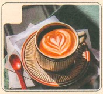
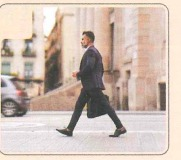
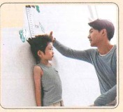
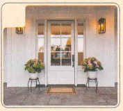
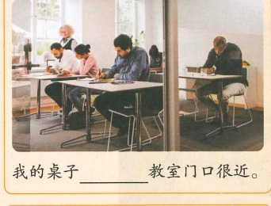
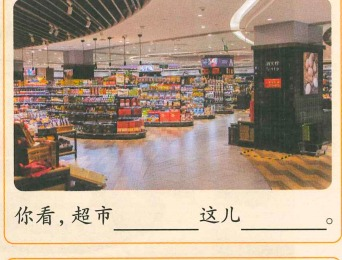
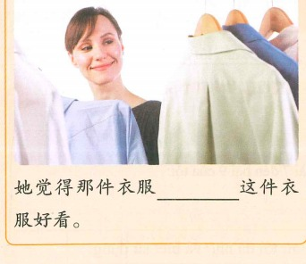
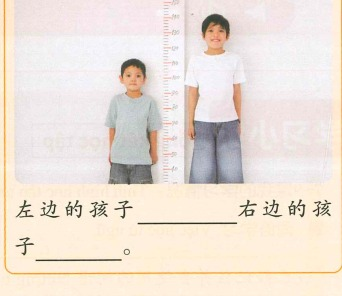

我去买杯奶茶
Em đi mua một cốc trà sữa
🔥 Khởi động
Chọn hình tương ứng: A 个子 B 走路 C 咖啡 D 门口




Hoàn thành theo tình hình thực tế: nhiệt độ hôm nay/hôm qua; giá cà phê/trà sữa; hương vị; sở thích.
📚 Từ vựng 1 · Học trước khi nghe
🎧 Nghe Bài khóa 1
（1）王一雪为什么想给儿子买裤子？ A 儿子的裤子坏了 B 儿子喜欢新裤子 C 儿子明天过生日
（2）刘明觉得哪条裤子好看？ A 黑色的裤子 B 白色的裤子 C 上次买的裤子
💬 Bài khóa 1
（1）刘明觉得儿子穿这条裤子好看吗？为什么？
（2）王一雪和刘明给儿子买裤子了吗？
🧠 Câu so sánh (3) · 没有
“没有” biểu thị ý nghĩa “không bằng/kém hơn”.
儿子的个子没有他那么高。
昨天没有今天这么冷。
这块手表没有那块好看。
Trong câu hỏi so sánh, hình thức khẳng định thường dùng “有”: 妹妹有姐姐高吗？
📚 Từ vựng 2 · Học trước khi nghe
🎧 Nghe Bài khóa 2
（1）王一雪想喝什么？ A 牛奶 B 奶茶 C 咖啡
（2）刘明现在想去哪儿？ A 家里 B 奶茶店 C 咖啡店
💬 Bài khóa 2
（1）咖啡店离这儿远不远？
（2）王一雪为什么不想喝咖啡？
🧠 Động từ “离”
“离” biểu thị khoảng cách về không gian hoặc thời gian.
咖啡店离这儿有点儿远。
学校离医院不远。
现在离我的生日还有三天。
📚 Từ vựng 3 · Học trước khi nghe
🎧 Nghe Bài khóa 3
（1）刘明想怎么回家？ A 打车 B 走路 C 跑步
（2）走路回家要多长时间？ A 半个多小时 B 一个多小时 C 一个半小时
💬 Bài khóa 3
🧠 Bổ ngữ thời lượng (1)
Từ ngữ biểu thị khoảng thời gian đặt sau động từ để nói hành động/trạng thái kéo dài bao lâu.
走半个多小时就到了。 他们学了两年。
我们休息十分钟。
Nếu tân ngữ là danh từ sự vật, thường đặt sau bổ ngữ thời lượng; nếu là đại từ/từ xưng hô, thường đặt trước bổ ngữ thời lượng.
Khi động từ có tân ngữ có thể lặp lại động từ: 他们学中文学了两年。
Động từ li hợp lặp lại thành tố động từ: 陈天中跑步跑了两个小时。
📚 Từ vựng 4 · Học trước khi nghe
🎧 Nghe Bài khóa 4
（1）王一雪和刘明给儿子买了几件衣服。（ ）
（2）因为想运动，所以王一雪和刘明是走回家的。（ ）
📖 Bài khóa 4
（1）王一雪和刘明没有买到什么？ A 衣服 B 水果 C 咖啡
（2）王一雪和刘明去哪儿坐了坐？ A 商店 B 商场 C 咖啡店
✏️ Bài tập tổng hợp
Chọn: A 旁边 B 走路 C 那么 D 个子 E 这样
（1）你女儿十多岁， 这么高啊！
（2）咖啡店不远，我们是 过去的。
（3）我们住的酒店 有个公交站。
（4）A：我也喜欢 的茶杯，你是在哪儿买的？
（5）虽然今天的工作也不少，但是我觉得没有昨天 累。
🖼️ Nhìn tranh hoàn thành câu
Đã giữ đầy đủ 4 tranh của giáo trình.

我的桌子 教室门口很近。

你看，超市 这儿 。

她觉得那件衣服 这件衣服好看。

左边的孩子 右边的孩子 。
🎭 Hoạt động trên lớp
Hai người một nhóm, thảo luận các cách thức di chuyển cho một chuyến du lịch, so sánh ưu điểm và nhược điểm. Cố gắng sử dụng từ vựng và điểm ngôn ngữ đã học.
B：我们都会开车，开车去吧。